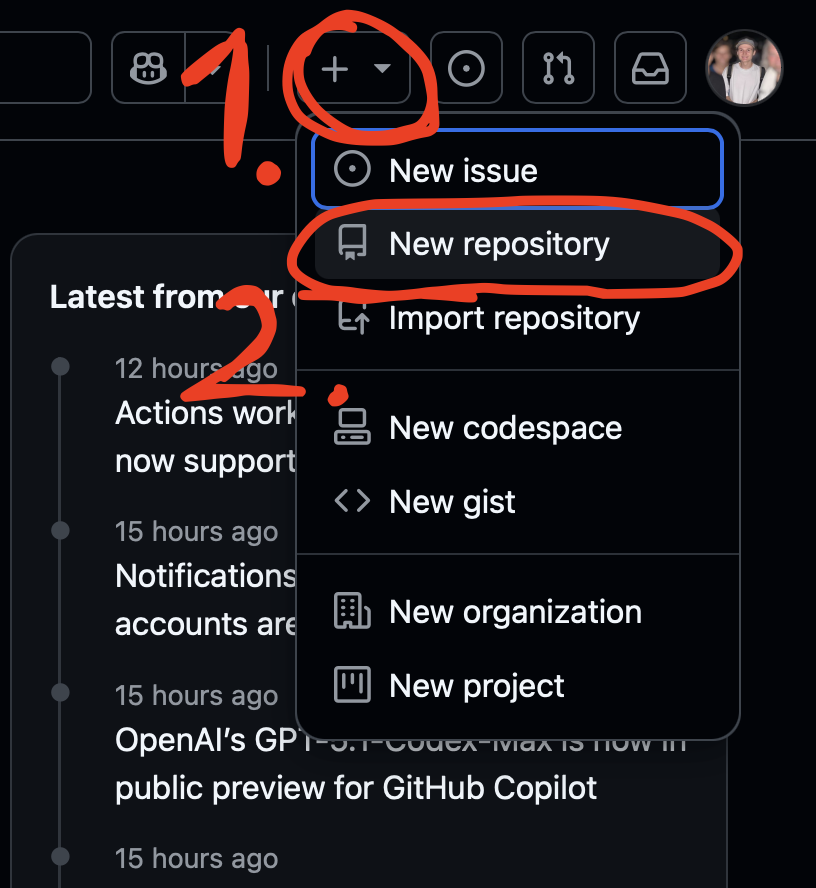
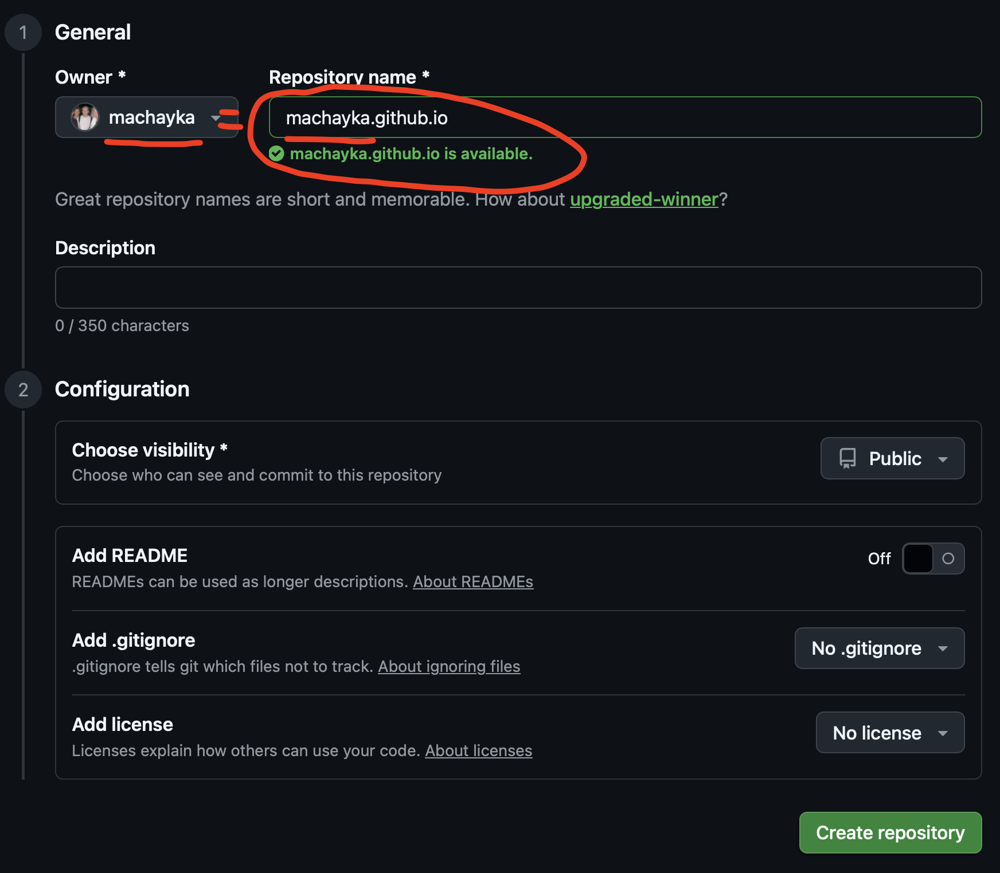
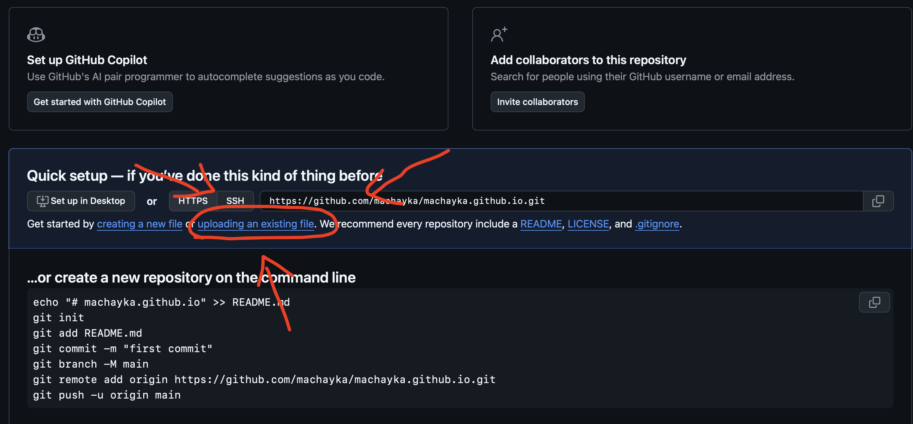

Opublikuj swoją stronę na GitHub
Jeśli chcesz tylko stronę internetową:
Korzystamy z Github do przechowywania kodu twojej nowej strony internetowej, natomiast skoro nasza strona jest statyczna, możemy wykorzystać Github Pages i darować sobie konfigurowanie własnego serwera. Jeśli jesteś zainteresowany/a konfiguracją serwera, musisz chwilę poczekać. Jesteśmy w trakcie pisania kolejnej części poradnika dotyczącej konfiguracji proxmox.
Korzystamy z Github do przechowywania kodu twojej nowej strony internetowej, natomiast skoro nasza strona jest statyczna, możemy wykorzystać Github Pages i darować sobie konfigurowanie własnego serwera. Jeśli jesteś zainteresowany/a konfiguracją serwera, musisz chwilę poczekać. Jesteśmy w trakcie pisania kolejnej części poradnika dotyczącej konfiguracji proxmox.
Krok po kroku - publikacja własnej strony
-
Krok 1: Załóż konto na github.com
Korzystanie jest darmowe
-
Krok 2: Kliknij przycisk "New repository"
Lub zielony przycisk "Nowe repozytorium"
 -
Krok 3: Nazwij repozytorium
nazwa-konta.github.io(musi się kończyć z "github.io")- • Nazwa repozytorium musi być taka sama jak nazwa konta
- • Ustaw jako Public
- • Kliknij "Create repository" 
-
Krok 4: GitHub pokaże Ci instrukcje
Nas interesuje tylko upload pliku.
 -
Krok 5: Kliknij "uploading an existing file"
Małe, niebieskie, w środku strony
-
Krok 6: Prześlij swoje pliki na stronę
- •
index.html(ten zmieniony przez AI) - • Oraz folder ze zdjęciami i dokumentami jeśli ich potrzebujesz
- • Kliknij "Commit changes"

- •
-
Krok 7: Odwiedź stronę
- • Przejdź pod adres https://nazwa-twojego-repozytorium.github.io
- • Zobaczysz prawdopodobnie kod 404. Nie przejmuj się i wróć na stronę za 1-2 minuty.
- • Twoim oczom powinno ukazać się dokładnie to samo co wcześniej otwierałeś/aś klikając w index.html
Co dalej?
Za każdym razem gdy zmienisz stronę:
- Wejdź w plik na GitHubie
- Kliknij ołówek (edytuj)
- Wklej nowy kod z AI
- Kliknij "Commit changes"
💡 Ważne
Nie przejmuj się że kod jest publiczny.
99% stron w internecie ma publiczny kod HTML. To nie tajemnica. Tajemnicą są hasła i dane - ale tych NIE trzymamy w kodzie strony.
99% stron w internecie ma publiczny kod HTML. To nie tajemnica. Tajemnicą są hasła i dane - ale tych NIE trzymamy w kodzie strony.